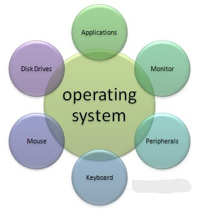
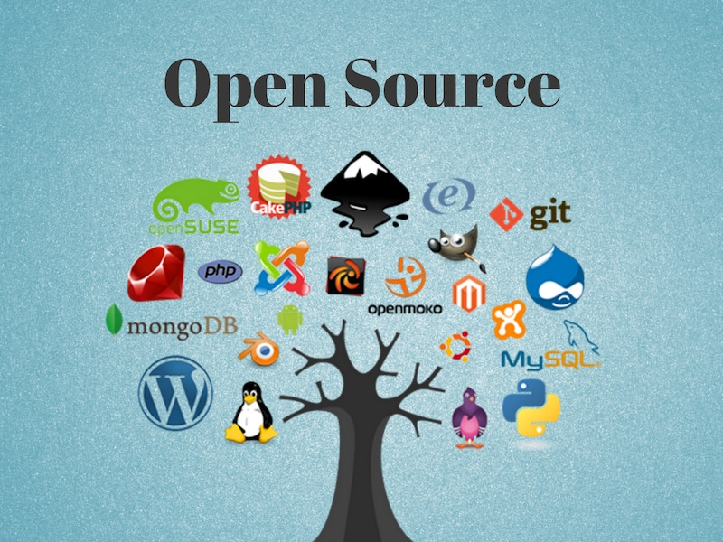
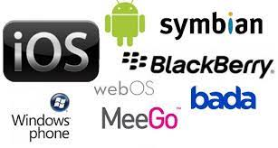

Computer Software and
Operating Sysem
1. Concept Of Software
1.1 Defination of software
A computer repuires a set of instructions to perform any task. A computer program is a set od instructions written in a computer that enables a computer to perform a task. A program tells a computer wnat to do and how to do it. Software is a collection of programs that operate and control computer hardware to perform of specific tasks. Software is not physical (i.e. tangible) part of a computer system. Software guides and controls the computer hardware at every step, where to start and where to stop doing a particular task. Software increases the capabilities of the hardware. Software and hardware are complementary to each other. Both software and hardware have to work together to produce meaningful output.
1.2 categories of software
The different categories of software are :
a. System Software
b. Application Software
c. Web Based Software
d. Mobile Software
1.2.1. system software
System software is the collection of programs that are designed to control and manage the operations of a computer system. The system software gives the computer hardware functionality. It controls and manages all the internal operations, like reading data from input devices, trans,itting information to output devices, checking the components of a computer, etc. System software provides an environment for application software in order to run on the computer. It also provides an environment for the development of application software.

System software may be:
i. System Management Software
ii. System Development Software
i. System Management Software
System management software is a collection of programs that are responsible for the management and functioning of a computer. There are three types of a system management software.
1. Operating System Software
2. Device Driver
3. Utility Software
1. Operating System Software
Operating system is a collection program that controls the overall operation of the computer system. It is the 1st program that is loaded into memory when the computer is turned on. It provides platform for other application program to run and execute. It provides user with an interface so that uses can easily communicate with computer. For example Linux, Windows, Mac etc.

2. Device Driver
A device driver is a software which is responsible for smooth functioning of the hardware device that is connected to the computer. When we add a new device to the computer, we need to install new software called device driver. Device driver will co-ordinate with the operating system and the newly installed hardware functions properly and smoothly.
3. Utility Software
It is the supporting software which is used to perform specific task related to the maintenance of the computer system. Some of the utility software are included in operating system where as some are available as separate utility in market. They are also called service program. For example Norton Utility, PC tools, win zip etc
ii. system development software
It refers to set of programs that are use to develop computer program. This type of software are not used by a normal user of the computes. They are used by programmers for the development of new program.
There are two types of system development software. They are:
1. Programming Language
2. Language Processor
1. Programming Language
The language with which we give instruction to the computer is known as programming language. Programming language are the set of different keywords, variable, operators, loops and other symbols etc. They help to make communication between computer and user. These are two types of programming language low level language and high level language.
2. Language Processor
It is a special kind computer software which translates the programs written one language in another language. It is compulsory for both low and high level language. It is also called language processor. The types of language translator are compiler, interpreter and assembler.
1.2.2. application software
Application software is a set of one or more program which are design to do a specific task. It is made to fulfill the user demand. This program directs a computer to solve user oriented problem such as preparing bills, calculating mathematical equation, preparing mark sheet etc. The software that are develop for user purpose is called application software.These types of software are generally develop by using high level language. for example Ms-Excel, Photoshop, Billing software etc. There are two types of application software. They are:
1. Packaged Software
2. Customized or Tailored Software
1. Packaged Software
They are the generalized set of programs design and develop for general purpose. It is generally large sized, error-free, advance and standard software with much more functionality fir especial work. This type of software doesn't perfectly match the requirement of many organization or user. They cannot be changed easily are developed and designed by reputed software Company so they are trust worthy. They are expensive for small organization. for example Ms-Office, Adobe, Macromedia etc.
2. Customized or Tailored Software
This is a software develop in high level language for special task. This types of software is developed for some specific purpose for solving specific problem of specific user or organization. The requirement on the user or organization can be perfectly matched. They can be changed easily since they are made by local programmer. for example: payroll system, inventory management, school management, billing software, mark sheet evaluation etc.
1.2.3. web based software
Web based software, (or a web-based application) is a software that runs on a server (computer connected to the Internet), while users connect to it from their computers using an Internet browser.
It is a software that is not required to be installed on a user computer, or mobile phone. Web based software is also known as cloud based software. It is a software that is stored or run on a server computer on the Internet. Some web based software may require small programs to be installed on a computer or mobile phone. Web based software is used by consumers and businesses alike: webmail, social networking sites and online shops are used by most of us. Business services are also very popular: from office suite (G suite) to online collaboration, accounting and CRM.
1.2.4. mobile app
A mobile application or app is a computer program or software application designed to run on a mobile device such as a phone, tablet, or watch. Mobile applications often stand in contrast to desktop applications which are designed to run on desktop computers, and web applications which run in mobile web browsers rather than directly on the mobile device.
Apps were originally intended for productivity assistance such as email, calendar, and contact databases, but the public demand for apps caused rapid expansion into other areas such as mobile games, factory automation, GPS and location-based services, order-tracking, and ticket purchases, so that there are now millions of apps available. Many apps require Internet access. Apps are generally downloaded from app stores, which are a type of digital distribution platforms.
The term "app", short for "application", has since become very popular; in 2010, it was listed as "Word of the Year" by the American Dialect Society.
Apps are broadly classified into three types: native apps, hybrid and web apps. Native applications are designed specifically for a mobile operating system, typically iOS or Android. Web apps are written in HTML5 or CSS and typically run through a browser. Hybrid apps are built using web technologies such as JavaScript, CSS, and HTML5 and function like web apps disguised in a native container.
2. concept of operating system
An operating system (OS) is an integrated set of program that controls overall resources such as CPU, memory, input-output device of the computer system. The major objective of operating system is to improve the performance and efficiency of a computer system. Like the manager of a company, an operating system is responsible for the smooth and efficient functioning of the entire computer system. The operating system provides the platform for other application program/software to run and execute. It provides user with an interface so that user can easily communicate with computers, which is more convenient to use and operate.
An operating system is a collection of program that controls the overall operation of the computer system. It also controls and co-ordinate the use of hardware, among the various application program for various user. So, it act as an interface between user and the computer hardware. The other major functions of operating system are:
1. It controls, monitor and co-ordinate overall operation of our computer system.
2. It act as an interface between user and computer.
3. It manages hardware resources such as CPU, memories, input-output terminals, networking equipment etc.
4. It hides programming and hardware complexity to the user.

The primary goal of an operating system is to maximize the productivity of a computer system by operating it in most efficient manner and maintaining the amount of human intervention. Some example of operating system are: MS-DOS, Windows, LINUX, MACOS, UNIX, Chrome, Fedora, Ubuntu etc.
2.1. Functions / Features / Advantages of Operating System (OS)
The operating system has various functions. Some major functions of it are given below:
1) Input-Output (I/O) Management:
Input-Output is essential to operate any computer. It allows computer to interact with several peripheral devices such as keyboard, mouse, printer, scanner etc.
2) User Interface (UI):
User Interface means an ideal environment in which user can work on it so that s/he can interact with the computerized system. Every operating system provides the feature of user interface in order to enhance the experience and joy of using computer or any other computerized system. It act as a bridge between user and computer. There are 2 types of user Interface. They are:
1. Character/Command User Interface ( CUI ) Eg:MS-DOS
2. Graphical User Interface (GUI ) Eg:Windows,MAC OS
3) Security:
The operating system of a computer has a number of built-in tools to protect against security threats such as viruses, unauthorized access, suspicious network activity etc. The basic security in a OS is to control access to your computer by setting users and password.
4) Process Management:
The process management allocates a processor to execute a chosen process. OS acts as a traffic controller, job scheduler, process scheduler and dispatcher.
5) Memory Management:
Memory is a large array of bytes, each with its own address. When the user request CPU for read-write operation. OS determines the amount of memory required for the program instruction and data. Then OS allocates required memory to load the program and data into RAM. When the program terminates it freeze up the space and new program is loaded.
6) Data Management:
Data management allows organizing their data into logical grouping called files.Earlier Operating system does not provide features of data management. Hence, they were inflexible but nowadays, every operating system provide this feature.
7) Command Interpreter:
The command interpreter reads the command that a user types in at a terminal, interprets them and translate them into detail set of instruction that computer hardware can understand. Every operating system must have command interpreter for its operation.
8) Dead-Lock prevention:
During processing a situation can arise in which a resources shared by two or more process cannot continue because the resources required by a process is held by other. This situation is known as dead lock. For eg. If process-1 allocates resources A and later required resources B and process-2 allocates resources B and later requires resources A. In this situation neither process-1 nor process-2 will be executed. Such situation is called deadlock. Operating system ensure prevention of deadlock by taking situation action by careful allocation of resources.
9) Time sharing:
The function of OS that involves CPU to allocate time in a number of user on same computer. This property generally found in network operating system such as windows NT.
10) Virtual Memory:
Virtual memory is the feature of an operating system that allows a computer to compensate for shortage of physical memory by transferring temporary files from RAM to disk. Virtual memory has twice as many address as main memory. The process of translating virtual address into real address is known as mapping. The copying of virtual pages from disk to main memory is swapping.
2.2. types of operating system
The types of operating system(OS) can be classified om the basis of following:
| Types of Operating System(OS) | ||
|---|---|---|
| On Basis Of Processing | On Basis Of User Interface(UI) | On Basis Of Mode Of User |
| Multi programming OS | Character User Interface | Single user |
| Multi tasking OS | Graphical User Interface | Multi user |
| Multi processing OS | ||
| Time sharing OS | ||
| Batch processing OS | ||
| Multi threading OS | ||
| Online processing OS | ||
| Real time OS | ||
A) On the basis of processing
1) Multi-programming OS:
Multi-programming is used in multi-user environment. It is the technique in which multiple user program are executed simultaneously by single processor. Multi-programming means when two or more than two program are provided to the CPU for processing or loaded in the internal storage of CPU at the same instant of time. From the loaded program once the portion of one program is executed and the portion of another program is executed and so on. Thus, multi-programming refers to concurrent execution of several program. The main purpose of multi-programming is to increase the utilization of computer and its resources. Different forms of multi-programming OS are multi-tasking, multi-processing and multi-user.
2) Multi-tasking OS:
Multi-tasking OS allows more than one program to run concurrently mainly in a single user system. These computer are capable of executing several tasks or program at the same time. For executing several task it can be single or multi-processing system. In some multi-tasking system one of the process is called fore-ground (active) other are called background (inactive). Multi-tasking OS increase the productivity of the user by executing many task simultaneously. Some of the most common example are MS-Windows, Linux, MAC OS etc.
3) Multiprocessing OS:
Multi-processing system has more than one processor linked in a coordinated way. Multiprocessing OS supports running a program in more than one CPU. Generally, super server are especially designed to support multiple processor. UNIX is commonly used multi-processing OS. Multi-programming and multiprocessing are no the same concept. Multi-programming involves concurrent execution of two or more programs by a single CPU, whereas multi-processing involves two or more processor (CPU) for controlling the different activities or execution of many program simultaneously. Multi-processing concept is also known as parallel processing. It is more costly and complex technique the multi-programming which dramatically increase the program execution speed of computer.
4) Time-Sharing OS:
Time sharing is a technique which enable many people located in various terminal to use a particular computer system at a same time. Processors time which is shared among multiple user simultaneously is termed as time sharing. Multiple jobs are executed by the CPU by switching between then, but the switches occurs so frequently that user can receive a immediate response.
Advantages:
Provide quick response.
Reduce CPU idle time.
Disadvantages:
Problem of reliability.
Less security.
Integrity.
5) Batch processing OS:
Batch processing is a technique which requires grouping of similar jobs, which consists of program, data and system command. It is also known offline processing. This type of processing is suitable in program with large completion or involvement. For example, Payroll, Weather forecasting, Statistical analysis and many more. User need not wait while the job is being processed. They can submit their program to the operator and collect them later which means, the jobs are entered stored on a disk in a batch or queue and is executed one after another under the control of the OS.
Major disadvantage of batch processing is that it does not allow interaction between user and program during execution.
6) Multi-threading OS:
A program in execution is known as process and can be divide into multiple smaller sub process. This sub-process are known as thread. Multi-threading OS has the ability to divide process into threads and execute them concurrently. Threads are individual process that execute simultaneously in multi-tasking OS.
7) Real time OS:
Real time processing method is one that controls environment by receiving data and taking action quickly to affect the functioning of the environment at the same instant of time. It is an online processing system in which processing time is critical. The entire processing task has to be completed in the predefined time. The real time OS is suitable for following type of operation.
Airlines or flight seat availability.
Rocket Launching system
Whole sell supplier and manufacturer. etc
8) Online processing OS:
It is a popular processing technique at present. In this method transaction are processed as soon as it happen at the place of its origin. It is quite simple compare to real time OS. In this type, user can interact or provides input during processing as well. The output is provided back to the user as soon as processing is completed.
B) On the basis of User Interface ( UI )
A user interface allows user to interact with the computer system. It provides user with an ideal environment so that user can experience better computing. It brings structure to the interaction between user and computer. Without user interface it is almost impossible to operate a computer smoothly. Hence, in order to enhance the experience of using computer, UI plays vital role. Mainly there are 2 types of User Interface (UI).
1. Character User Interface (CUI)
2. Graphical User Interface (GUI)
1) Character User Interface (CUI):
It is a type of operating system in which whole computer operates or depend upon the command issued by user. All the operations that take place in CUI have their own specific command. Hence, they are known as Character User Interface. User have to remember all the command need to operate the computers. So, they are non user friendly. Only the people people having technical knowledge would operate this type of operating system. It is primitive type of OS, in which graphics, pictures, icons, drop-down menu, dialogue box etc are not used which make it more difficult to use. It uses the character or text mode of computer such as DOS and UNIX. A command prompt is a sequence of character used in CUI. Commands are typed in to instruct computer. MS-DOS is a Character User Interface operating system.
The major advantage of this type of OS is they can have quick response as long as user enters correct command whereas, the disadvantages of command driven User Interface is that, they are very difficult to use if the user is beginner and doesn't know correct command. However, it can be used in older system with no processing capabilities and low storage.
Features of CUI
1. It is single user and single tasking operating system.
2. Less user friendly than GUI.
3. Commands are used to instruct the computer.
4. User needs to remember the command for operating this system.
5. It cannot display graphics, icon, pictures and multimedia.
6. It is faster then GUI system.
7. Pointing devices such as mouse, joystick, track-pad are not recognize.
8. It can be used in low memory and low processing computer.
2) Graphical User Interface (GUI):
It is a type of operating system in which computer are operated just by clicking or selecting the required icon or dialogue box instead of writing a direct command to the system. Since graphics like icons, pictures, drop-down menus, dialogue boxes etc are used which makes it more user-friendly than CUI. Since, user doesn't have to remember a single command, every user without technical knowledge can also use this type of OS. Due to user friendly interface, they are simple to use and widely used for domestic application. The goal of graphical operating system is to create a system that the computer user can turn on and operate in right way without any training or by remembering commands. The main advantages of GUI is that they are easy to use especially for beginners. The main disadvantage of GUI is they consume more memory for operation.Windows, MAC OS etc are the example of GUI.
The first Graphical User Interface was designed by Xerox corporations Palo's Alto research center in 1970's, but it was not popular whereas in until the 1980's the emergence of Apple Macintosh that use GUI became popular.
Features of GUI
1. It is user-friendly. So, it is easy to use.
2. User don't have to remember supports full multimedia and animation.
3. It requires larger memory for its processing.
4. GUI environments supports full multimedia and animation.
5. It can be used in network environment.
6. It is multi-tasking, multi-programming, multi-user operating system.
7. Every type of peripheral devices can be used.
8. GUI environment have following basic components.
Differentiate between Character User Interface and Graphical User Interface [ CUI v/s GUI ]
| Character User Interface [ CUI ] | Graphical User Interface [ GUI ] |
|---|---|
| CUI has to interact with the applications by making use of commands. | GUI is a user interface in which user interact with applications by making use of graphics. |
| CUI stands for Character User Interface. | GUI stands for Graphical User Interface. |
| In CUI only one task can run at a time i.e. Single tasking. | In GUI more than one task can run at a time simultaneously. |
| It is not user friendly interface. | It is very user friendly interface. |
| The user do everything by using commands. | Everything are interacted by pointing the application using devices like mouse. |
| It is faster than GUI. | It is slower than CUI. |
| Older computers were operated on CUI. | Modern computers use GUI. |
| Eg: DOS, UNIX etc. | Eg: Windows, MAC-OS |
C) On the mode of user:
There are two types of OS on the basic of mode of user.
1. Single User.
2. Multi User.
1) Singe User:
A single user OS is a type of OS that is develop and intended for use on a computer or similar machine that will only have a single user at any given time. This is the most common type of OS used on a home computer as well as on computer in office or other work environment. There are two general type of single user system. Single user single tasking and another is single user multi tasking. The example of single user single tasking are not much ore feasible for general purpose computing. For eg MS-DOS, PC-DOS etc.
2) Multi User:
Multi user OS is computer operating system that allows multiple user on different terminal to access a single system with one OS in it . A multi user OS differs from a single user system on network, in that each user is accessing same OS at different machine. The multi user OS shares computer resources among different users, allowing each user a small slice of the processor time. This concept is also known as time sharing. Due to that, it gives the user the impression that they are all being served simultaneously even though the OS serves them one at a time for example: Linux, UNIX etc.
3. windows operating system
Windows Operating System is a a single user or multi user, multi tasking GUI based operating system . In a window environment, a user can interact with the system through icons, menus, dialog boxes, etc. The icons and commands on menus and dialouge boxes indicate the type of task they perform. So, a user doesn't need to remember commands and keys combination to perform tasks. A user can simply choose icons, menus and commands from the dialouge box by using pointing devices like a mouse, trackball, touch pad, etc. A user can also use keyboard shortcuts in a GUI based operating system. When Microsoft Windows Operating System is loaded on a computer, the desktop appears on the monitor screen.
Some elements of Windows Operating System are:
Desktop:
The area on the display screen where icons are grouped is refereed as desktop.
Icon:
Icons are the small pictures that represent commands, files or windows.
Pointer:
A symbol (usually angled arrow) that appears on the display screen and that are moved to select objects and commands. They are controlled by a pointing device such as a mouse, track pad, light pens etc.
Windows:
Windows are displayed on screen and we can change their shape and size at will. Each windows can run a different program or display different information.
Menus:
Most graphical user interface let us to execute commands by selecting a choice from a menu.
Folders:
Graphical representation of a directory.
4. open source and mobile operating system
4.1. Concept of open source operating system
Open source generally refers to those applications which source code is freely available in the internet to the world wide user. Basically, the software that falls under general public license are open source software. User can customize the source code of the open source software according to the user requirements. They need not buy the license to use the software. Source code can be modified and re-distributed to any other person legally. This software are free of cost. Some of the examples of Open Source Software are Linux, Unix, Mozilla, Apache etc. Similarly, Open Source operating system are those operating system whose program code are open to all the user. Some common examples of open source operating system are Linux, Unix, Minix, Open Solaris etc.
UNIX:
UNIX is a powerful flexible and manageable operating system with good utilities and communication abilities. It is multi-user, multi-tasking and multi-processing operating system. It is used in bigger size machine like mainframe and mini computer. It was develop by AT&T Bell lab around 1970 AD. UNIX is developed in C and Assembly language. The development of the UNIX has given birth to many operating system such as Linux, Solaris etc. These operating system inherits its main feature from UNIX.
Linux:
It is open source powerful UNIX based operating system, that can run on variety of platform including Intel, Power PC, DEC Alpha processor as well as multiprocessing system. It was developed by Linux Torvalds at the university of Helsinki as a college project. He release the version of Linux including all the source code. It is user develop product, meaning that user around the world who ran this OS for their own use have develop many of its components and drivers. It is multi-user, multi-tasking and multi-programming OS mainly popular for server system. It is distributed through different distributor such as Red Hat, Open USE, Ubuntu, Fedora, Debian, Granular Linux, Mandriva etc.
MAC OS:
MAC OS is a popular GUI based OS for Apple Inc. It is used in Apple Macintosh computer. It has very high quality graphical user interface. Earlier version of this OS were only compatible with motorola 68000 series of processors but now they are compatible with Intel processors also.
4.2. Concept of Mobile operating system
A mobile operating system is an operating system for smartphones, tablets, smartwatches, smartglasses, or other non-laptop personal mobile computing devices. While computers such as typical laptops are "mobile", the operating systems used on them are generally not considered mobile ones, as they were originally designed for desktop computers that historically did not have or need specific mobile features. This line distinguishing mobile and other forms has become blurred in recent years, due to the fact that newer devices have become smaller and more mobile unlike hardware of the past. Key notabilities blurring this line are the introduction of tablet computers and light-weight laptops and the hybridization of the two in 2-in-1 PCs.
Mobile operating systems combine features of a desktop computer operating system with other features useful for mobile or handheld use, and usually including a wireless inbuilt modem and SIM tray for telephony and data connection. In Q1 2018, over 123 million smartphones were sold (highest ever recorded) with 60.2 percent running Android and 20.9 percent running iOS. Nonetheless, although not as many as 2018 (1.56 billion), 2021 still had soaring sales, 1.43 billion to be exact with 53.32 percent being Android. Android alone is more popular than the popular desktop operating system Microsoft Windows, and in general smartphone use (even without tablets) outnumbers desktop use.

Mobile devices, with mobile communications abilities (e.g., smartphones), contain two mobile operating systems – the main user-facing software platform is supplemented by a second low-level proprietary real-time operating system which operates the radio and other hardware. Research has shown that these low-level systems may contain a range of security vulnerabilities permitting malicious base stations to gain high levels of control over the mobile device.
Types of Mobile operating system
Android OS
The Android operating system is the most popular operating system today. It is a mobile OS based on the Linux Kernel and open-source software. The android operating system was developed by Google. The first Android device was launched in 2008.
BlackBerry OS
The BlackBerry operating system is a mobile operating system developed by Research In Motion (RIM). This operating system was designed specifically for BlackBerry handheld devices. This operating system is beneficial for the corporate users because it provides synchronization with Microsoft Exchange, Novell GroupWise email, Lotus Domino, and other business software when used with the BlackBerry Enterprise Server.
EMUI
Huawei EMUI is a front-end touch interface developed by Huawei Technologies Co. Ltd. and its sub-brand Honor which is based on Google's Android Open Source Project (AOSP). EMUI is preinstalled on most Huawei and Honor devices. While it was based on the open-source Android operating system, it consists of closed-source proprietary software.
MIUI
Mi User Interface (MIUI), developed by the Chinese electronic company Xiaomi, is a mobile operating system based on the Android Open Source Project (AOSP). MIUI is mostly found in Xiaomi smartphones such as the Mi and Redmi Series. However, it also has official ROM support for a few Android devices. Although MIUI is based on AOSP, which is open-source, it consists of closed-source proprietary software.
Bada (Samsung Electronics):
Bada is a Samsung mobile operating system that was launched in 2010. The Samsung wave was the first mobile to use the bada operating system. The bada operating system offers many mobile features, such as 3-D graphics, application installation, and multipoint-touch.
iPhone OS / iOS:
The iOS was developed by the Apple inc for the use on its device. The iOS operating system is the most popular operating system today. It is a very secure operating system. The iOS operating system is not available for any other mobiles.
Thank You
Table of content
- 1. Concept Of Software
- 1.1 Defination of Software
- 1.2 Categories of Software
- 1.2.1. System Software
- 1.2.2. Application Software
- 1.2.3. Web Based Software
- 1.2.4. Mobile App
- 2. Concept of Operating System
- 2.1. Functions / Features / Advantages of Operating System (OS)
- 2.2. Types of Operating System
- 3. Windows Operating System
- 4. Open Source and Mobile Operating System
- 4.1. Concept of Open Source Operating System
- 4.2. Concept of Mobile operating system
- >Move to Top<